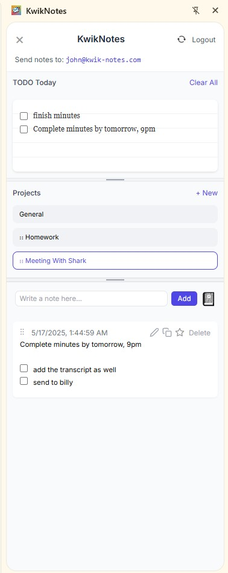

Capture ideas at the speed of thought. Email yourself a note, pin tasks to Today, and work offline — all inside Chrome.
Install on Chrome → Jot a quick note in the add‑bar or fire off an email—your thoughts appear in seconds.
Open any mail app and send an email to your personal KwikNotes address (e.g. alex@kwik-notes.com). Specify a project in the subject—or leave it blank to file under General.
Hit the ★ Favorite button to drop a note straight onto your Daily list. The floating Today panel follows you so top‑priority tasks never leave your sight.
Create, rename, merge, and drag notes between projects with buttery‑smooth drag‑and‑drop.
A roomy legal‑pad editor with numbered and checkbox lists—perfect for brainstorming in the sidebar or in the pop‑out window.
Encrypted local cache means offline access; everything syncs automatically the moment you’re back online.
Trip Planning – creates (or tags) the “Trip Planning” project.